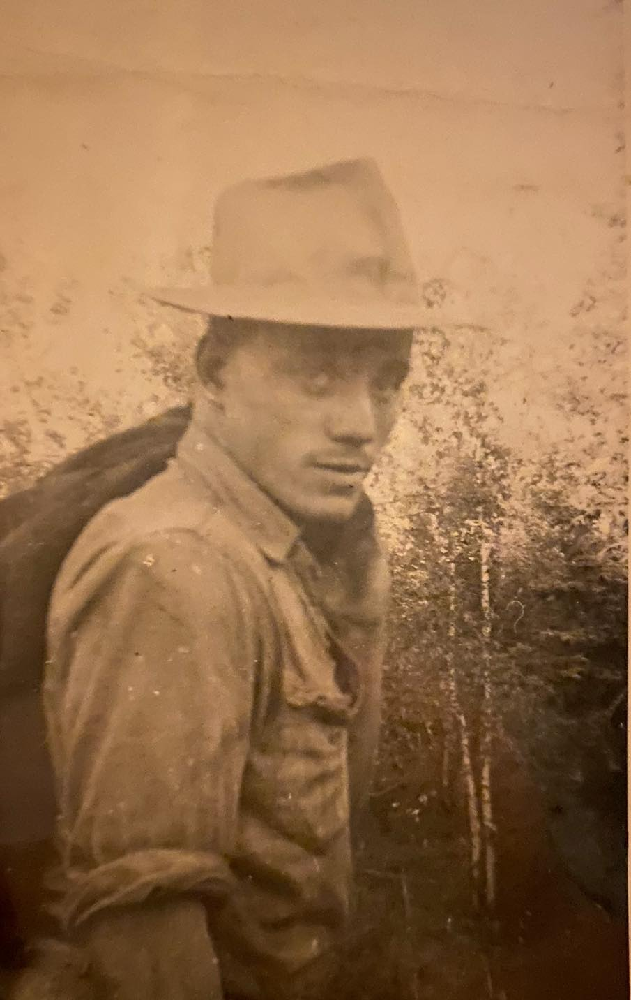
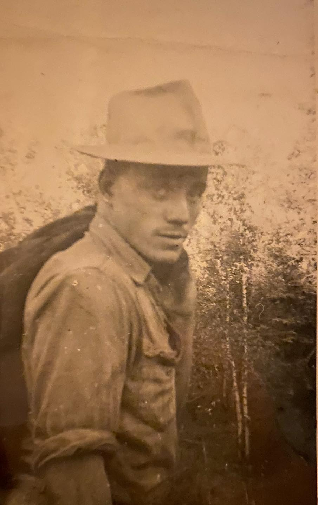
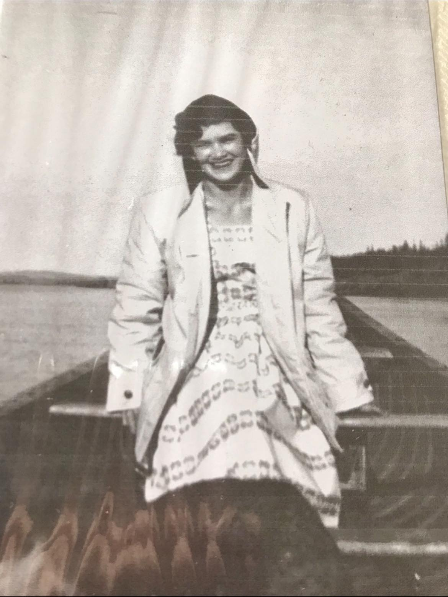

Williamson and Mercredi side of the family
My dad (Pat Williamson)
My father was born in Edmonton, October 16th, 1962 is partially Cree from Northern Alberta, and also partially Irish. My father worked as a Master Mechanic/Millwright for 4 Decades and still going. He is also a Steam Locomotive Engineer and now works on his Gold Claim mining for gold in British Columbia.
My Grandfather (George Williamson)


 

George was born in Northern Ireland. In 1951, he served as a corporal for the Territorial Army of Northern Ireland. He attended Trinity College and Queen's University in Belfast obtaining his mechanical engineering degree. He was an avid rugby player and fan.
My Grandmother (Lucienne Williamson), maiden name is Mercredi.
Lucienne was born in Fort Chipewyan, July 18th, 1936 Northeast of Fort McMurray, Alberta. She was a stay-at-home mom taking care of 5 kids while George worked.